A model can forecast your business beautifully and still point you toward the wrong decision. The way out is an argument for why your number means what you think it means. Without one, nobody can say how far off it might be, or whether it is close enough to act on.
Everything on this page, arranged in the order you would actually do it. Each stage names what to produce and the signal that should send you back a step. Most analyses that go wrong skipped stage two or stage three.
Every estimate is off by some amount. An identification argument is what lets you say by how much. It states what your number would equal if the assumptions held, and it names those assumptions, so you can ask how badly each could fail and which way that pushes the answer. The decision then tells you how much error you can absorb. "Close enough" is the first compared with the second.
The assumptions the estimate rests on, the direction of the bias if they fail, and a range once you say how badly they could fail.
Keeping or cutting a channel needs the right side of break-even. Sizing an investment needs the number itself.
If the range clears the decision, act. If it straddles the decision, you know what a test must resolve and what it is worth.
Fit cannot stand in for the argument. A high R² measures prediction and a tight interval measures precision. Both stay excellent when the estimate is far from the effect you want, and neither tells you the direction of the error.
The argument is useful even when it fails. "Not identified, because expected demand drives both spend and sales" already tells you the bias runs upward and gives you something to size it against. An estimate with no argument behind it might be close. You would have no way of knowing.
Chapter 1 shows a model that forecasts well and advises badly, with a simulator you can break.
Chapter 12 runs the whole workflow on 156 weeks of media and sales, and ends with a filled-in readout.
When an observational estimate is enough to act on, and when a test pays for itself.
The nine stages below are the spine. Each links to the chapter that explains it, so read down this list and jump out only where you need the reasoning.

Stage five is where most of the leverage is. Answer a few questions about what you can control and the router names the design, what it assumes, and what it will estimate.
A first-pass answer to "how many markets, how many weeks, and what will it cost?" before anyone commits budget. It assumes half the markets are treated and compares test-period sales between the two groups.
A planning approximation: two-sided 5% test, 80% power, weeks treated as independent. Weekly sales are usually correlated, which makes real tests somewhat less powerful than this. Before committing, rerun the design on your own history by placing fake tests in past periods.
The FAQ answers the ones practitioners ask most, from "can I read SHAP values as drivers?" to "how do I put an experiment into an MMM?"
Dana runs retention for a subscription product. Renewals slipped two points last quarter, the budget review is three weeks out, and she needs to know which levers to pull before she walks into that room.
Her team trains a gradient-boosted model on eight customer features. It predicts renewals well, and the explanation chart ranks the drivers neatly: discount, ad spend, bugs reported. So far, so useful.
Then the chart says something odd. Bigger discounts go with fewer renewals. Customers who report more bugs renew more often. Read as advice, the model recommends cutting discounts and shipping more bugs.
The first fix is the obvious one: control for everything. The team reruns the analysis with double machine learning and all seven other features as controls. The discount effect stays strongly negative, and the interval around it gets tight. The wrong answer now looks more convincing than it did before.
What finally settles it is a small randomized test. Discount depth is assigned by coin flip inside each salesperson's book of accounts. The real effect turns out to be small and positive. Salespeople had been offering their deepest discounts to the customers who seemed least interested, and that unrecorded lack of interest was driving both the discount and the cancellation.
Dana is a dramatization. The numbers come from a simulation in the SHAP documentation where the true causal structure is known by construction, as replicated in the vault.
Each dot is a customer. A hidden trait, how much they need the product, raises renewals and also lowers the discount a salesperson offers. Slide the controls and watch what a regression concludes.
Push the customer slider to the right while observing. The interval shrinks and stays centered on the wrong value. Sample size cures noise. Confounding is a different disease, and precision offers no protection against it.
Now switch to randomized discounts. The hidden trait is still there and still matters for renewal, yet the estimate lands on the truth, because a coin flip cannot be influenced by customer need.
A display campaign on the Yahoo! front page, measured two ways. Effect on brand-related searches:
People who saw the ad that day were simply more active online that day. Day, session, page-view and time-spent controls left the estimate roughly 160 times too large.
These sound alike and they are answered by different mathematics. Mixing them up is the single most expensive habit in analytics.
Among customers who happen to have a big discount, how many renew? A predictive model answers this well. It quietly assumes everyone keeps behaving as they did, so the correlations it learned stay put.
Good for: forecasting demand, ranking leads, flagging churn risk, pricing risk.
If we set the discount ourselves, how many renew? Stepping in changes who gets what, which breaks the very correlations the predictive model relied on.
Needed for: budget allocation, pricing changes, feature launches, any choice among levers.
Customer need influences the discount a salesperson offers and also influences renewal. When you only watch, association travels along both routes from discount to renewal. When you intervene, you decide the discount, so whatever used to decide it is cut out.
Two routes are open. The direct arrow carries the real effect. The route through customer need carries a spurious association. A regression blends them.
Rarely. In the retention simulation, the explanation chart matched the true effect for exactly one kind of feature: one that is independent of the other features and independent of anything unmeasured that also affects the outcome. Macro-economic conditions behaved that way. Everything a human had a hand in choosing did not.
Observed confounding. Ad spend had zero causal effect on renewal and still ranked as a top-three driver, because it moved together with features that do matter. Adjusting for the right measured controls repaired it.
Redundancy with a downstream feature. Sales calls work partly by creating more product interactions. With both in the model, credit was split and the sales-call effect was understated. Dropping the downstream feature repaired it.
Unobserved confounding. Discount and bugs reported both depend on unmeasured product need. No diagnostic based on the measured columns flagged them. Only randomization repaired it.
Data cannot tell you what causes what unless you add a model of how the world works. A directed acyclic graph, or DAG, is that model in its most compact form: circles for variables, arrows for direct causal influence, and no path that loops back to where it started.
An arrow from A to B says A may directly affect B. It leaves the size and shape of the effect open.
Leaving an arrow out says there is no direct effect. All the testable content of a diagram lives in the arrows you left out.
Any middle node on any path is a fork, a chain or a collider. Learn how each behaves and you can read any diagram.
Each panel simulates data from the little diagram above it and plots the two outer variables. Press the button to "condition" on the middle variable, which means looking only at cases where it takes a similar value.
Age drives both shoe size and reading skill. Children with big feet read better until you compare children of the same age.
A drug improves recovery by lowering blood pressure. Hold blood pressure fixed and the drug appears to do nothing.
Sport and study are unrelated. Both can win a bursary. Among bursary winners, weaker athletes must be stronger students.
| Junction | Shape | Left alone | Conditioned on the middle | What it means for analysis |
|---|---|---|---|---|
| Fork | A ← B → C | Open (spurious link) | Blocked | Adjust for common causes of treatment and outcome. |
| Chain | A → B → C | Open (real effect flows) | Blocked | Leave mediators alone if you want the total effect. |
| Collider | A → B ← C | Blocked | Open (spurious link created) | Never adjust for, or select on, a common effect. |
Notice that the fork and the chain produce the same pattern in data: linked when left alone, unlinked after conditioning. Numbers alone cannot tell them apart. That fact returns with force in the chapter on equivalence classes.
Notice also what the collider does to the popular instinct that more control variables are always safer. Adding a collider to a regression manufactures an association that was never there. This kind of selection effect is often called Berkson's bias.
d-separation is the rulebook for reading independence off a diagram. A path is blocked when it contains a fork or chain whose middle node you conditioned on, or a collider that you left alone along with everything downstream of it. Two variables are d-separated when every path between them is blocked.
You want the effect of ad spend on sales. Click any other node to add it to your control set. The goal: close every non-causal path while leaving the causal ones untouched.
Demand only. It closes three backdoor paths and opens a fourth. Demand is a common cause on some paths and a collider on the path between season and economy. One variable, two roles.
Kitchen sink. Controlling for site visits blocks part of the effect you came to measure. Controlling for loyalty sign-ups, a common effect of ads and sales, opens a brand new spurious path.
Unmeasured demand. Tick the box and search for a set that works. There is none. That is what "not identified from the data on hand" looks like, and no estimator can repair it.
A backdoor path is any path that begins with an arrow pointing into the treatment. Those paths carry confounding. A set of controls is a valid adjustment set when it
Several valid sets can exist, and the smallest one is usually preferred. The set is a tool for one arrow only: it identifies the effect of the treatment, and says nothing reliable about the coefficients of the controls themselves.
For disjoint sets of nodes X, Y, S: X is d-separated from Y given S when every path between a member of X and a member of Y is blocked by S. A path is blocked if (1) it contains a non-collider that is in S, or (2) it contains a collider that is outside S and has no descendant in S.
Causal Markov assumption: every d-separation in the graph implies the matching conditional independence in the data-generating distribution. Faithfulness: the only independencies in the distribution are the ones d-separation implies, so no effects cancel out by coincidence. Markov lets you go from graph to data. Faithfulness lets you go back.
The vault's DAG notes reproduce a tutorial example in which a collider W sits between treatment and outcome (X → W ← Y) and the listed adjustment sets include W. This page follows the standard backdoor criterion instead, under which a common effect of treatment and outcome should be left out of the adjustment set. The playground above lets you see the bias that appears when it is included.
You have observational data, which speaks the language of seeing. Your question is about doing. do-calculus is a small set of rewriting rules that translates one into the other whenever the diagram allows it, and tells you honestly when it cannot be done.
The backdoor adjustment formula. The left side is about an intervention nobody ran. The right side contains only quantities you can measure. In words: compare like with like inside each group of Z, then average the groups by how common they are in the whole population.
Two kinds of customer: high need and low need. In both groups a discount truly lifts renewal by 10 points. Change who receives discounts and compare the naive comparison with the adjusted one.
If, in the diagram with arrows into the intervened variables removed, some observed variable is d-separated from the outcome, you may add or drop it from the conditioning without changing the answer.
If the only connection left between a variable and the outcome runs through its outgoing arrows, then setting it and observing it give the same result. Every backdoor is already closed. This is the rule behind adjustment.
If, once the relevant incoming arrows are removed, an intervened variable has no remaining route to the outcome, the intervention is irrelevant and can be deleted from the expression.
Apply the rules in any order. If you can reach an expression with no do in it, the effect is identified: it is a function of the observable distribution. The rules are also complete. When no sequence of them removes the do, the effect cannot be computed from observational data under that diagram by any method at all.
Write GX̅ for the graph with arrows into X removed and GZ̲ for the graph with arrows out of Z removed.
Rule 1. P(y | do(x), z, w) = P(y | do(x), w) if Y ⊥ Z | X, W in GX̅.
Rule 2. P(y | do(x), do(z), w) = P(y | do(x), z, w) if Y ⊥ Z | X, W in GX̅ Z̲.
Rule 3. P(y | do(x), do(z), w) = P(y | do(x), w) if Y ⊥ Z | X, W in the graph with arrows into X removed and arrows into those Z-nodes that are not ancestors of any W-node removed.
Sometimes the confounder is unmeasured and adjustment is impossible, yet the effect is still identified. If the treatment works entirely through a measured mediator M that is itself shielded from the confounder, do-calculus yields the front-door formula:
P(y | do(x)) = Σm P(m | x) Σx′ P(y | m, x′) P(x′)
The vault flags the front-door criterion as a gap in its own coverage, so treat this paragraph as general background from Pearl's Causality.
"Is it identified?" hides two separate questions. One is about your assumptions. The other is about your data and model. An analysis must pass both, and passing one tells you nothing about the other.
The effect of setting ad spend, written with do or with potential outcomes. It lives outside any statistical model.
A function of the distribution of observed variables, such as an adjusted difference in means.
A number with uncertainty, computed from a finite sample. Estimation error shrinks with more data. Failures at the two locks do not.
Imagine unlimited data on every variable you measured. Could the causal quantity be computed? If yes, it is causally identified. The answer depends on the diagram: which backdoor paths exist and whether measured variables can block them.
It is untestable from the data alone. Two diagrams with opposite causal conclusions can fit the same spreadsheet equally well.
A parameter is statistically identified when different values of it produce different distributions of observable data. If two values fit every possible dataset equally well, no amount of data separates them.
This one concerns variation. Two channels that always move together, a treatment nobody in some group ever received, a model with more free knobs than the data can turn.
A randomized test with enough spread in the treatment. Or an observational study with a defensible adjustment set and real overlap.
The diagram says adjusting for season is enough, yet TV only ever ran in December. The formula asks about TV in June, and June has no TV. The slider below shows the collinear version.
The discount coefficient: standard error 0.05, wrong sign. The regression pinned down an association perfectly well. It was never the causal effect.
Confounded channels that are also flighted together. Any number reported here reflects the modeler's choices more than the market.
TV and online video are planned as a package. The true effects are 1.0 and 0.5. As their spend becomes more correlated, the data can still pin down the total, while the split between them dissolves.
| Quantity | Truth | What data allows (95%) |
|---|---|---|
| TV effect | 1.0 | |
| Video effect | 0.5 | |
| TV + Video | 1.5 |
The four boxes above are the clean cases. Most real analyses sit in between: the effect is identified in principle and the data carry only a little information about it. That zone is called weak identification, and it is where most media work lives.
The answer comes entirely from priors or functional form. More data of the same kind changes nothing. Report a range or change the design.
The data speak, quietly. The estimate moves when the prior, the adstock shape or one outlier week changes. Report it with the sensitivity attached, and prefer decisions that only need the sign or the ranking.
Reasonable changes to priors and specification leave the estimate about where it was. The number can carry weight in a budget decision.
A Bayesian model's estimate for one channel blends what you believed beforehand with what the data say. Move the prior and watch whether the answer follows it. The data here point to a return of 1.10.
A Bayesian model returns a posterior for every parameter, identified or otherwise. For a parameter the data cannot inform, the posterior is the prior with extra steps, and it stays that way at any sample size. A useful test: does this posterior keep depending heavily on the prior as data grows? If so, the parameter is weakly or partially identified, and honest reporting separates it from the parameters the data actually speak to. That practice has a name, transparent parametrization.
Conditional independence: given the controls, treatment is as good as randomly assigned. Sufficiency: the controls block every backdoor path. Overlap: within every combination of controls, both treated and untreated cases occur. The first two are causal identification. The third is statistical identification. Regression will return a number when any of them fails.
The arithmetic of "controlling for" a variable is the same everywhere. Its job depends on one design fact: did a randomizer assign the treatment? If yes, controls only soak up noise, the estimate is unbiased with or without them, and the best controls are whatever predicts the outcome well. If no, the controls are the identification argument, a missing one creates a bias that never shrinks, and they must be chosen from the diagram instead of from goodness of fit. In both cases, variables measured after the treatment stay out.
Partly. Causal discovery algorithms search observational data for the footprints that causal structure leaves behind. They can recover a surprising amount, and they stop at a well-defined wall.
The hidden truth: X → Z ← Y and Z → W. PC starts by assuming everything is connected, then lets independence tests chip edges away.
Causal Markov. If the diagram says two variables are d-separated, the data show them independent.
Faithfulness. Every independence in the data comes from the diagram's structure. If a direct effect and an indirect effect happened to cancel exactly, the data would show independence, the algorithm would delete a real arrow, and nothing would warn you.
PC adds a third: no unmeasured common causes. Its cousin FCI relaxes that and marks edges where a hidden confounder may be present.
| Method | Idea | Hidden confounders | Returns |
|---|---|---|---|
| PC | Independence tests | Assumed absent | Equivalence class |
| FCI | Independence tests | Tolerated | Partial ancestral graph |
| GES | Greedy search on a fit score such as BIC | Assumed absent | Equivalence class |
| LiNGAM, ANM | Asymmetry in the noise | Assumed absent | A single DAG, under extra assumptions |
| NOTEARS | Smooth optimization with an acyclicity penalty | Assumed absent | A weighted DAG |
With unlimited data, PC and GES arrive at the same equivalence class. Bootstrapping shows which edges are stable, and a stable edge can still be wrong.
Several diagrams can imply exactly the same set of independencies. They form a Markov equivalence class, and independence-based discovery can identify the class and go no further. Click a diagram to see who shares its class.
Two DAGs are Markov equivalent exactly when they share
The class is drawn as a CPDAG. Arrows appear where every member agrees. Plain lines appear where members disagree, and each plain line is a direction the data on hand does not identify.
Does awareness drive search interest, or does search interest drive awareness? If both orientations sit in the same class, the two diagrams fit your data identically and recommend different interventions.
Breaking the tie takes something from outside the independence pattern: an experiment, timing, domain knowledge, or stronger assumptions about how the data were generated.
Truth: X causes Y. Fit a line in each direction and plot what is left over against the predictor. In the true direction the leftovers should be unrelated to the predictor.
This is the idea behind LiNGAM. It buys a direction at the price of assumptions: linear effects, non-Gaussian noise, no hidden confounder between the pair. If the assumed form is wrong, the result can mislead.
Real diagrams grow to dozens of nodes, and nobody can reason over that in a meeting. A summary causal DAG groups related variables into clusters to make a smaller diagram that is still safe for causal reasoning.
An illustrative diagram made for this page. The paper behind this chapter works a cloud-database example that goes from 12 nodes and 23 edges to 5 nodes and 9 edges.
Contracting two nodes makes the cluster a neighbor of everything either one touched. Since a diagram's claims live in its missing arrows, a summary claims less than the original. It can lose detail and it cannot invent an independence.
Every fine-grained DAG that could collapse into the summary is "compatible" with it. A statement read off the summary is trusted only if it holds in all of them. The test for that is called s-separation: expand the clusters into their most connected version, then apply ordinary d-separation.
The three rules are sound and complete on summary DAGs. An effect identified in the summary is valid for every compatible diagram, so adjustment sets can be chosen at cluster level.
There is a price. Finding the summary that adds the fewest edges for a given size is NP-hard, so practical tools use a greedy search. And a conservative summary may fail to show an independence that the detailed diagram does contain. You trade resolution for a diagram a room full of people can actually check, which also makes it more forgiving of a few wrong edges in the detailed version.
Size: at most k cluster nodes, with k chosen by the user. Dependencies preserved: a directed connection in the original still appears between the corresponding clusters. No spurious independence: the summary never implies a conditional independence that the original does not. Clusters must also keep the diagram acyclic, which is why the example above groups variables that sit at the same stage of the funnel.
A DAG assumes every relevant variable is drawn, every arrow has a known direction, nothing loops, and there is one population at one moment. Real problems break each of those. For each broken assumption there is a graph built to say so honestly. Pick one to see what its marks mean.
| Graph | What it adds to a DAG | Hidden common causes | Reach for it when |
|---|---|---|---|
| DAG | Nothing. The baseline. | Must be drawn as nodes | You can name every relevant variable and direction. |
| CPDAG | Undirected edges | Assumed absent | A discovery algorithm produced the graph. |
| ADMG | Two-headed edges | Shown as edges | You know confounding exists and cannot measure its source. |
| PAG | Circle marks, two-headed edges | Allowed and flagged | Discovery was run without assuming everything was measured. |
| Summary DAG | Cluster nodes | Same as the DAG it summarizes | The full diagram is too large to discuss. |
| Selection diagram | Square difference markers | Drawn as usual | A result must move from one population to another. |
| Time-series graph | Time-indexed copies of each variable | Drawn as usual | Effects carry over or outcomes feed back across periods. |
| Cyclic graph | Loops | Drawn as usual | Two variables settle each other within one period. |
| SWIG | Split treatment nodes, potential outcomes | Drawn as usual | You want to check an assumption stated in potential-outcome terms. |
| Twin network | A second, counterfactual copy of the world | Shared noise nodes | The question is "what would have happened to this unit?" |
| Interference graph | Arrows between units | Drawn as usual | One unit's treatment can affect another's outcome. |
| Path diagram | A number on each arrow | Curved two-headed arcs | You are willing to assume linear, additive effects. |
Start with a DAG and ask which of its assumptions you cannot defend. If you cannot name every common cause, move to an ADMG. If software drew the graph, read it as a CPDAG or a PAG and treat every undirected edge or circle as an open question. If the effect unfolds over weeks, index the variables by time. If the result must travel, add difference markers.
These combine. A media problem with carryover, an unmeasured demand driver and a result to transport is a time-indexed graph with two-headed edges and square markers.
The path-blocking logic from Chapter 4 extends to most of these with small changes. Two-headed edges behave like a hidden fork. Circle marks mean a path might be open, so a safe reading treats it as open.
Loops are the exception. In a graph with feedback, the usual separation rules can fail, and a regression of one looped variable on the other has no clean causal reading. Unrolling the loop over time, or modeling the equilibrium explicitly, is the standard way out.
Mature causal work includes a list of things it does not know. Saying "this is not identified" is a finding, and it is usually the finding that saves the most money.
If a variable drives both the treatment and the outcome and you have no column for it, no adjustment set exists. Controls that are loosely related to it remove a fraction of the bias. In the retention example they removed about a sixth.
Every plain line in a CPDAG is a question the independence pattern leaves open. A discovery algorithm that prints a fully directed graph from such data has made a choice for you.
Each customer is seen either with the discount or without it, never both. Individual effects are unobservable in principle. Averages over groups are the most that can be identified.
Controls are chosen to identify one arrow. Reading their coefficients as effects is the "Table 2 fallacy". In one simulation, 90% intervals for a confounded control contained the truth 0 to 1% of the time, and coverage fell as the sample grew from 2,500 to 10,000. The close-up below shows why.
If a channel has only ever run at one spend level, or only alongside another channel, its separate effect at other levels is extrapolation from the model's functional form.
"No unmeasured confounding" holds by design in a randomized experiment and cannot be tested in observational data. Some implications of a diagram can be checked. Its core causal claims rest on knowledge from outside the dataset.
A regression prints a coefficient for every variable you put in it, with a standard error and a row of stars beside each one. Only one of those rows was designed to answer a causal question. The rest are scaffolding, and reading them as findings is one of the most common errors in applied analytics.
The name comes from epidemiology, where "Table 1" describes the sample and "Table 2" lists the full regression output. It works like this. You want the effect of TV on sales, so you pick controls that close TV's backdoor paths. The TV row now means something. Then the deck goes to a client, and someone asks what the model says about price, about promotions, about competitor activity. The numbers are right there in the table, each with its own stars, so they get read out as effects too.
Each of those controls would need its own diagram and its own adjustment set to earn a causal reading. The set that works for TV was never chosen to work for them, and three separate things go wrong.
| Variable | Coef. | Std. err. | |
|---|---|---|---|
| TV spend | 0.48 | 0.06 | *** |
| Competitor price | 0.37 | 0.05 | *** |
| Promotion depth | 0.22 | 0.07 | ** |
| Seasonality index | 0.09 | 0.04 | * |
| Branded search | 0.61 | 0.05 | *** |
Illustrative numbers. The readings follow the diagram used in the simulator below.
One regression, two rows. Ad spend truly moves sales by +0.50. Competitor price truly does nothing here, and it is in the model because it influences ad spend and so closes a backdoor. Unmeasured category demand pushes competitor price and sales at the same time.
A simulation study fitted Bayesian regressions to 3,000 datasets generated from a known diagram. The treatment X had a valid adjustment set. The controls did not. Share of 90% intervals that contained the true value:
| Row | n = 2,500 | n = 5,000 | n = 10,000 |
|---|---|---|---|
| X, the treatment | 89% | 89% | 91% |
| Z, confounded control | 1% | 1% | 0% |
| L, control | 16% | 11% | 7% |
| J, control | 13% | 7% | 6% |
| W, control | 29% | 21% | 15% |
Coverage for every control falls as the sample grows. When the hidden variable was disconnected from Z, its coverage returned to 90 to 93%, which is the slider at zero in the simulator above. The choice between Bayesian and frequentist fitting made no difference to the problem.
Media mix models. The coefficients on price, promotion, distribution and seasonality are controls for the media effects. Reporting them as "what price does to sales" needs a separate argument.
Driver charts. A ranked importance chart for a predictive model reads every feature as an effect at once. It is the Table 2 fallacy with better graphics.
Mediators in the control set. Branded search and site traffic sit downstream of upper-funnel media. Their coefficients absorb credit that belongs to the channels that caused them, and the channel rows shrink to direct effects.
Name one treatment per model. Report its row and grey out the rest. If a second effect matters, draw its diagram, choose its own adjustment set, and expect that set to add some variables and drop others. Keep a note in every deck stating which rows carry a causal reading.
Suppose an observational study finds that exposed customers convert at some multiple of the unexposed rate. How strong would a hidden confounder have to be, in its link to both exposure and conversion, to fully explain that away?
A sensitivity analysis answers one question: how badly would my key assumption have to fail before the conclusion changes? The three examples here match the three most common designs in media measurement.
The weekly model in Chapter 12 estimated a TV return of 2.16 with a standard error of 0.19. Break-even is 1.0. Suppose a driver nobody recorded pushes spend and sales the same way. Describe it by how much of the leftover variation it explains in each, after the existing controls.
The benchmark buttons use illustrative values for how much seasonality explains. In a real analysis you compute them by dropping seasonality from your own model and measuring what it explained.
Treated markets ran 12 points above control markets during the test. Before the test, the gap between the two groups wandered by as much as 2 points from week to week with no treatment at all. The analysis assumes that wandering would not have grown. Allow it to.
A flat pre-test period is weak reassurance, since a test with eight pre-weeks can miss a slow drift. Reporting the largest multiple the result survives says more than "pre-trends looked fine".
Refit with the prior shifted or widened and see whether the estimate follows. If it does, that parameter is weakly identified and should be reported that way. The dial in Chapter 6 lets you try it.
State the breaking point in units a stakeholder can judge, such as "a driver as strong as seasonality". Report the curve and the breaking point, never a pass or fail. If allowing for violations leaves the interval no wider than before, the violations you allowed were too mild.
The chapters before this one ask you to build an identification argument. This is where it pays off. Experiments cost money, time and sales, and a biased estimate can still lead to the right decision, provided you can say which way the bias runs and how large it could be. Each condition below is something only that argument can tell you.
All four rest on the same footing. A robust sign, a known bias direction and a range to hold against break-even each come from having named the assumptions and asked how they could fail. Skip that step and the estimate may still be close, with nothing to tell you so.
Sales you give up. A holdout is a group of customers you chose not to advertise to. A go-dark test in real markets has a revenue line attached.
Time. Six weeks of test plus cooldown plus analysis is a quarter gone. Decisions that cannot wait will be made on what you have.
False comfort from small tests. An underpowered test that comes back significant tends to overstate the effect, and one that comes back flat is read as "no effect". A weak experiment can mislead more than a careful observational estimate with an honest range.
Narrow answers. A test answers for its markets, weeks and spend level. Getting from there to the decision takes the assumptions in Chapter 13.
None of this argues against testing. It argues for spending tests where the decision is large, hard to reverse, and sensitive to the number.
A regional retailer has to decide whether to renew $10M of paid social. The model says each dollar returns 1.5. Sensitivity analysis widened that to somewhere between 0.8 and 2.2, and break-even is 1.0. The analytics lead asks for a geo test. Finance asks what the test is worth, and "it would reduce our uncertainty" does not survive the meeting. Decision theory gives an answer in dollars: take every result the test could return, work out how much better the renewal decision gets in each case, and average. Then compare that with the price.
For the standard error, take the smallest detectable return from the sizing calculator and divide by 2.8.
Reads your range as the middle 90% of a bell curve, puts returns in margin terms, counts one year of the decision, assumes the test measures the same quantity the decision turns on, and assumes cost grows in proportion to the size of the test. The arithmetic is the normal closed form from the vault's value-of-information note.
Suppose someone could hand you the true return today. EVPI is how much better your decision would be, on average, than the one you would make now. No test, model upgrade or vendor study can be worth more to this decision. If the price is above the ceiling, stop there.
A real test returns a noisy estimate, so it buys part of the ceiling. Returns diminish quickly. In the vault's worked example one observation captures 35% of the ceiling, four capture 71%, sixteen capture 91% and sixty-four capture 98%.
ENBS is the value of the test minus its cost. Because value flattens while cost keeps climbing, there is a best size: the point where one more market adds less value than it costs. Power analysis tells you what a test can see. This tells you whether seeing it is worth the money.
In 1956 Dennis Lindley proposed scoring an experiment by how much it is expected to shrink your uncertainty about the unknowns. The score is the expected drop in entropy from prior to posterior, averaged over the data the experiment might produce. It is called expected information gain, and modern Bayesian experimental design chooses the design that maximizes it.
For a single quantity with bell-shaped uncertainty the formula is short:
information gain = ½ × log(1 + prior variance ÷ test variance)
The logarithm is why returns diminish. In the vault's example the first observation buys 0.80 nats and three observations buy 1.28. A nat is a unit of information, about 1.44 bits. The calculator above reports the same score for your test.
Try this in the calculator. Drag break-even down to 0.50, so the whole range sits above it. The information line does not move. The test would still narrow the range by about 42%. Its dollar value falls from about $117k to about $2k, because no plausible result would stop the renewal.
Information gain measures learning about the parameters. Value of information measures improvement in one decision. A test can be rich in the first and nearly empty in the second.
Use dollars when one decision is on the table and you can write down its payoff. Use information when the result will feed many later decisions you cannot list yet, such as a response curve reused across next year's plans. In between, target the information: score the test on the one quantity the decision turns on, such as the marginal return at the planned spend, and ignore what it teaches about everything else.
A geo test fits this frame directly. The design is the choice of markets, channel, size of the spend change and length of the window. The prior is the current model's posterior. Each candidate design gets a score before any money moves.
Both scores start from how uncertain you are today. That has to be the range left after sensitivity analysis. Feed in the model's own interval, which assumes no confounding, and the range looks tight, the ceiling looks tiny, and the arithmetic tells you never to test. An overconfident model prices its own correction at zero. This is the thesis of the guide in dollar form: without the argument you cannot say how wrong you might be, so you cannot say what finding out is worth.
A geo test pins down the return in its markets, weeks and spend level. Whether that carries to the national plan stays open, as Chapter 13 describes. The value of learning one piece of the puzzle has its own name, EVPPI, and it never exceeds the ceiling. In the vault's example, learning one of two equally uncertain inputs captures 54% of the total. Ranking the pieces this way tells you which uncertainty is worth buying down first.
Value and information are computed under the model you believe today. If the model is wrong, so is the score. A model that assumes a straight-line response will always send the test's spend to the two extremes, since under a straight line nothing in the middle can teach it anything, and it will never find the curve it ruled out. Check the design against a rival model before trusting the ranking.
These are three different jobs. To learn how a channel responds, design for information. To find the best allocation in as few tries as possible, use Bayesian optimization, which spends its trials near the suspected optimum. To keep earning while you learn, use a bandit, which shifts budget toward what is working and accepts that it will know less about what is not.
Audience targeting is where the seeing and doing questions get confused most profitably for everyone except the advertiser. This example follows one team through the confusion and out the other side.
Marcus leads growth at a meal-kit company. He has $40,000 for the next flight, a list of 100,000 lapsed and prospective customers, and enough budget, at about $2 per person reached, to cover one in five of them. The CFO has stopped accepting conversion counts and wants one number: dollars per incremental order, meaning orders that would not have happened without the ad.
The data science team builds what most teams build first. They train a model on past behavior to predict who will order in the next 30 days, score the whole list, and target the top 20%. The model is accurate. The targeted audience converts at several times the list average, and the cost per order on the dashboard is the best the company has ever seen.
Then the quarter closes and total orders have barely moved. The dashboard says the campaign produced thousands of orders. The revenue line says it produced very few.
Marcus asks for a proper comparison. The analysts compare people who were shown ads with people who were not, and the exposed group orders far more often. That looks like vindication, until someone points out that the model chose the exposed group because they were likely to order. The comparison had measured the model's own selection.
So they match exposed and unexposed people on age, region and tenure. The gap shrinks and stays large. They try matching on the propensity score itself and hit a wall: nobody with a high score went unexposed, and nobody with a low score saw an ad. There are no comparable pairs to match.
What works is the cheapest idea on the table. For the next flight, 10% of every score band is held out at random and shown nothing. Three weeks later the answer is in, and it is uncomfortable. In the top-scoring band, held-out customers ordered almost as often as the ones who saw ads.
Purchase intent drives orders. The propensity model reads intent and uses it to decide who gets the ad. That puts an arrow from intent into exposure, which is a backdoor path the team built on purpose. Every comparison of exposed and unexposed people travels along it.
There is a second problem underneath. The model was trained to answer "who will order?" The budget decision needs "whose behavior will the ad change?" Those are the seeing and doing questions from Chapter 2, and the people who score highest on the first are often the ones who needed no persuading.
Each dot is a customer. Left to right is how likely they are to order with no ad. Bottom to top is how much an ad raises that chance. In real life the vertical position is invisible, since nobody is observed both with and without the ad. The simulation shows it so you can see what each strategy is really buying.
Lift in order rate attributed to the campaign, from the simulation at the current budget.
The first bar compares two different kinds of customer. The second compares the same kind of customer with and without the ad.
Across 663 randomized ad experiments at Facebook, analysts re-estimated each one with observational methods and rich user data. Median lift, lower-funnel outcomes:
The study's authors describe this as a problem with the data more than with the models. The delivery system selects on signals at the level of each auction, and user-level features cannot recover them. As targeting gets more precise, exposure becomes nearly deterministic and overlap disappears.
Marcus's second flight targets on uplift. The dashboard conversion rate drops by nearly half and the room gets nervous. The holdout readout arrives a few weeks later: incremental orders are up by about three quarters on the same budget, and dollars per incremental order has fallen by more than 40%. How much of that you get depends on the uplift model. Uplift is a small difference between two noisy rates, so it takes far more randomized data to learn than a propensity score does. Drag the model-quality slider down to see the gain shrink.
Nobody can label an individual as a persuadable. Uplift is identified for groups, on average. The four-way sorting of customers into sure things, persuadables and lost causes is a useful picture and each person's membership remains unknowable.
The same logic settles a contest between a new method and the current one. Randomize people to be targeted by each method, keep a holdout inside each arm, and compare dollars per incremental conversion. Conversion rate of the chosen audience rewards whichever method is better at finding people who were going to convert.
Three separate mechanisms push likely converters into the exposed group. Activity: seeing an ad requires being online, and people who are online more also convert more online. Targeting: the delivery system learns who meets its objective and bids harder for them. Competition: exposure depends on winning auctions against rival advertisers, whose own targeting shapes who is left. A randomized holdout survives all three because the held-out group faces the same machinery.
Most media questions are about spend that varies continuously, effects that arrive over several weeks, and budgets that were set by people watching the same sales line you are modeling. This chapter runs the workflow on that kind of data.
Ines owns the media mix model at a national retailer. Annual planning is five weeks away, and the CFO has asked a direct question: is TV earning its $9M, or should $2M of it move elsewhere? She has 156 weeks of sales and spend.
Her first model regresses weekly sales on TV spend. It says every TV dollar returns 3.5. Nobody in the room believes that, including her. TV runs heaviest before the holidays, when sales would be high anyway.
She adds seasonality and holiday terms. The return drops to 1.8 and the fit jumps to 0.93. That looks credible, and for a day she plans to present it.
Then she adds carryover, because TV keeps working for weeks after it airs, and the number climbs back to 2.6. That is unsettling. A more correct model should not have moved further from the plausible answer. What had happened is that the 1.8 was two errors partly cancelling: ignoring carryover pushed the estimate down, and something else was pushing it up.
The something else comes out in a conversation with the planning team. "We always go heavier when the forecast looks strong," one of them says. Planners had been reading demand signals, weather, competitor moves and retail chatter, and moving weight toward the good weeks. None of that is a column in her data.
She tries branded search volume as a stand-in for demand and gets 2.2. Better, and she knows a stand-in is only partial. What she can do is say how far off the remaining bias could plausibly leave her, and ask for a flighting test: vary TV by market on a schedule set by a random draw. In the simulator below, turning that kind of variation up brings the estimate to about 1.6 against a true 1.5.
Green: the effect being measured. Blue: carryover from last week's spend. Red: the backdoor through demand that planners anticipated and the dataset does not record.
A typical model has about 156 weekly rows and is asked to estimate three or four parameters for each of twenty or more channels. In one published comparison, five models all fitted with R² of 0.98 to 0.99 and disagreed by about 50% on what media contributed.
The top controls decide how the data were generated: what the planners did. The checkboxes decide what the analyst puts in the model. The true return on TV is 1.50 in every setting.
Watch the R² while you change the settings. It stays high whether the estimate is right or far off. Seasonality and demand explain most of the sales line on their own, so a model can fit beautifully and credit the wrong thing.
Set spend to follow the calendar fully with no other variation. Once seasonality is controlled, nothing is left to learn from and the interval explodes. The effect is causally identified and the data cannot estimate it.
Raise the second slider. The interval stays tight and the estimate drifts upward. A demand proxy removes part of the bias. Only variation unrelated to demand, the third slider, removes it reliably.
A caution on the proxy. Branded search helps here because, in this simulation, it reflects demand and is not itself moved by TV. In real data TV does drive branded search, which makes it partly a mediator. Controlling for it then removes some of TV's effect while it removes some of the bias. Which dominates is an empirical question, and the diagram is what tells you to ask it.
Stage eight of the workflow asks for one page with three headings. This is what that page looks like for the analysis above. Copy it and replace the specifics.
An experiment answers a question about the markets, weeks and spend levels it ran in. The budget decision is about somewhere else. Moving a causal result from one setting to another is called transport, and it needs its own identification argument.
Lena runs measurement for a consumer brand. Her media mix model says TV returns well over two dollars per dollar. To check it, the team runs a six-week TV heavy-up in eight markets, the eight largest, because that is where the sales team had relationships with the stations. The test comes back at an incremental return of about 1.0.
The CFO wants one number for the planning deck. The quick fix is to overwrite the model's TV coefficient with the test result. Lena does it, reruns the optimizer, and watches it pull most of the money out of TV.
Something nags at her. The test measured the return on the extra dollars above current spend, in large markets, in spring. The model's number is the return on all TV dollars, nationally, across the year. She has pasted an answer to one question over the answer to another.
Her second attempt is more careful. She reweights the test result to the national mix of large and small markets. That helps with one difference and leaves the others: the spend level, the season, and whether small markets respond the way large ones do at all.
The approach that holds up treats the model as a description of the mechanism, with a saturation curve and a carryover rate that are assumed to be shared between the test and the nation. The model is asked to predict its own answer for that exact test, and its parameters are adjusted until the prediction matches. The rest of this chapter takes that apart: when a result can be moved, which correction applies, and what one test can and cannot pin down.
Generalizing means going from a test sample to the larger population it was drawn from. Transporting means going to a population the sample was not drawn from. Media tests are nearly always the second kind.
A selection diagram is a causal diagram with one addition: a square marker pointing at every mechanism that may differ between the test and the target. Where no marker points, you are asserting the mechanism is the same in both places. Choose the role that the differing variable plays and see which correction the diagram licenses.
In every case the same thing was observed: some variable has a different distribution in the test than in the target. The right correction differed each time, and in one case no correction existed. Comparing distributions between the two settings cannot tell you which case you are in. Knowing the mechanism does.
The formal test is short. A set of measured variables licenses reweighting when, once the treatment is set, it separates the outcome from every square marker in the diagram. If no measured set does that, the result is not transportable from this data, and running the same test longer will not change that.
The diagram-only results are worst-case. They allow any variable to change the response in any way. A structural model assumes more: that sales follow a specific saturating curve, that carryover decays at a fixed rate, that effects add up. Those assumptions license transport across spend levels and time periods that the diagram alone cannot.
The price is that the shape is now carrying weight. A transported number from a structural model should come with a statement of which parameters are assumed shared, and a sensitivity check on the ones that are not.
The faint curves are response curves the model considers plausible before any test. An experiment measures the rise between two spend levels, which is one straight line laid against the curve. Watch which curves survive, and which summary numbers tighten.
A go-dark test measures the average return on current spend. A heavy-up measures the return on the next dollars, which on a saturating curve is lower. Most apparent conflicts between a test and a model are these two being compared.
Have the model compute the lift it implies for the same markets, weeks and spend path, carryover weeks included, and compare that with the measured lift. A coefficient has no fixed meaning once saturation and carryover are free to move.
The slider above widens the test's uncertainty to allow for the setting being different. Without it, one tight test overrules years of data about other periods. With it set too wide, the test teaches nothing.
Test markets get chosen for convenience: where relationships exist, where data is clean, where the team expects a win. Those are rarely the average market. Adjustment after the fact helped little in the 111-site study. The dependable remedy is in the design, which means choosing test markets at random within groups defined by size, region and media mix.
Once you have a handful of tests on one channel, the spread between them is itself the measure of how well results travel. A hierarchical model estimates the average effect and the market-to-market variation together. The number to carry into a new market or into a model is the prediction for the next market, which is wider than the average.
With fewer than about five tests the data cannot estimate that variation, so it has to come from a stated prior. The slider stands in for that judgment.
Whether the mechanism is shared. The assumption that test and target respond alike, given the measured variables, cannot be tested from the two datasets. It can only be probed with a sensitivity analysis or a test in the target.
The curve beyond the tested range. One test fixes one secant. Different combinations of scale and saturation fit it equally well and diverge elsewhere.
How far results travel, from one or two tests. The market-to-market variation needs several tests to estimate.
Whether calibration made the model right. Fitting a model to lift tests is estimation. It constrains parameters and guarantees nothing about accuracy. The tests used to fit cannot also be the validation.
Write P for the test population and P* for the target.
A pre-treatment variable that changes the response: P*(y | do(x)) = Σz P(y | do(x), z) P*(z). Take stratum-level effects from the test and weight by the target's mix.
A variable that differs for unrelated reasons: P*(y | do(x)) = P(y | do(x)). The result carries over directly, and reweighting would introduce error.
A mediator whose response to treatment differs: P*(y | do(x)) = Σz P(y | do(x), z) P*(z | x). Take the effect of the mediator on the outcome from the test and the mediator's response to treatment from the target.
The graphical conditions that certify these are sufficient. They can confirm that transport is licensed and cannot always rule it out.
Outcome model: fit the outcome in the test as a function of treatment and covariates, then average its predictions over the target's covariates. Inverse odds weighting: weight each test unit by its odds of belonging to the target instead of the test. Doubly robust: combine both, which stays consistent if either model is right. A quick check on the weights: their sum should be close to the test sample size, and a large departure signals a few units carrying the whole answer.
Averaging studies blurs their differences. An alternative records, for each study, which mechanisms it shares with the target, and takes from each only the pieces it can validly supply. Several studies that are each insufficient can together identify a target effect. When the procedure finds no valid combination, more data of the same kind will not help.
PublishedA finding reported in the cited paper or study.
VaultA replication or simulation written in the knowledge base to illustrate a published idea. Treat the direction as reliable and the exact figures as one run.
IllustrationA simulator or example built for this page, with parameters chosen to make the mechanism visible. Every "Try it" panel is one. They show how a problem behaves and say nothing about how large it is in your data.
Research for this page was drawn from the Second Brain knowledge base. Each row links the vault note that was used and names the original work that note is built on.
| Used for | Vault note | Original source behind the note |
|---|
The thesis that an identification argument is what makes "close enough" answerable, the framing of identification as two separate locks, the interactive simulations, the media diagram in Chapter 9, and the character of Dana are this page's own synthesis and illustration, as are Marcus, the audience-targeting simulation, the sample regression table in the Table 2 close-up, Lena and the three simulators in Chapter 13, the weekly model and its readout in Chapter 12, the sizing and value-of-testing calculators, the example graphs in the field guide to graph types, and the arrangement of the workflow and design router. Statements of the three do-calculus rules and the front-door formula follow Pearl (2009), Causality, 2nd ed., Cambridge University Press, which the vault references and lists as not yet fully covered. The E-value formula follows VanderWeele and Ding (2017), cited by the vault's sensitivity-analysis note. Journal, volume and page details for Lewis, Rao and Reiley (2011), Glymour, Zhang and Spirtes (2019), Künzel et al. (2019), Lewis and Rao (2015), Gordon, Moakler and Zettelmeyer (2023), Kerman, Wang and Vaver (2017), Meager (2019), Cinelli and Hazlett (2020), Rambachan and Roth (2023) and the Plausible GMM working paper were checked against publisher or index pages in November 2026. The background references for graph types outside the vault have not been checked the same way.